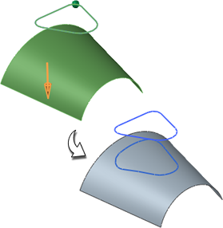

投影点和曲线
预计完成这堂课需要：7–12 分钟
使用投影曲线  命令可以投影曲线、边以及点到小平面体、面以及基准平面。
命令可以投影曲线、边以及点到小平面体、面以及基准平面。
方向方法控制曲线如何投影：沿面的法向、朝向点、朝向直线、沿矢量、与矢量成角度、等弧长或者投影两侧。当您使用沿矢量、与矢量成角度或者等弧长投影曲线时，投影方向是关联的，投影曲线在孔或面的边处被修剪。
投影曲线和点可以被关联、复制或移动到指定的面/平面上。(您不能关联复制或移动的曲线到它们原始的对象、指定的片体、面或平面上)
如果选中高级曲线拟合，可以指定以下方法：阶次和段、阶次和公差、保留参数化以及自动拟合。自动拟合让您指定需要的最小阶次、最大阶次以及最大段数值。
连结曲线方法包括三次、常规以及五次。这些方法让您让您可以连结同时被投影的曲线，如果您选择高级曲线拟合，三次和五次选项不可选。
